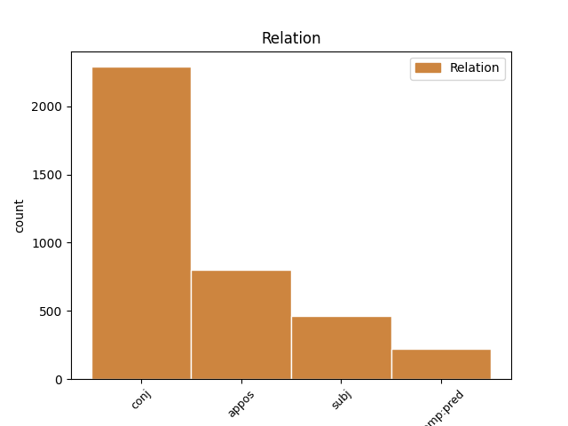
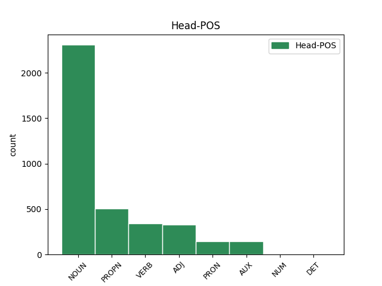
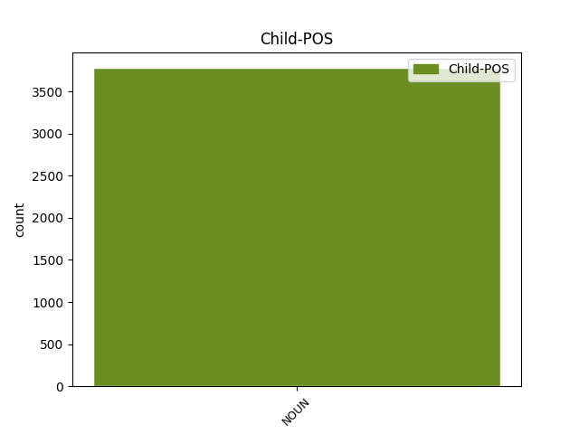

Distribution of features within this leaf



Agreement Rules sorted by frequency.
- When the dependent token is the conjunct(conj) of the head token, and the dependent token is NOUN.
1 ἔξω _ _ _ _ 0 _ _ _
2 οἱ _ _ _ _ 0 _ _ _
3 κύνες _ _ _ _ 0 _ _ _
4 καὶ _ _ _ _ 0 _ _ _
5 οἱ _ _ _ _ 0 _ _ _
6 φάρμακοι _ _ _ _ 0 _ _ _
7 καὶ _ _ _ _ 0 _ _ _
8 οἱ _ _ _ _ 0 _ _ _
9 πόρνοι _ _ _ _ 0 _ _ _
10 καὶ _ _ _ _ 0 _ _ _
11 οἱ _ _ _ _ 0 _ _ _
12 φονεῖς φονεύς NOUN Nb Case=Nom|Gender=Masc|Number=Plur 0 _ _ _
13 καὶ _ _ _ _ 0 _ _ _
14 οἱ _ _ _ _ 0 _ _ _
15 εἰδωλολάτραι εἰδωλολάτρης NOUN Nb Case=Nom|Gender=Masc|Number=Plur 12 conj _ ref=REV_22.15
16 καὶ _ _ _ _ 0 _ _ _
17 πᾶς _ _ _ _ 0 _ _ _
18 ποιῶν _ _ _ _ 0 _ _ _
19 καὶ _ _ _ _ 0 _ _ _
20 φιλῶν _ _ _ _ 0 _ _ _
21 ψεῦδος _ _ _ _ 0 _ _ _
1 σύνδουλός _ _ _ _ 0 _ _ _
2 σού _ _ _ _ 0 _ _ _
3 εἰμι _ _ _ _ 0 _ _ _
4 καὶ _ _ _ _ 0 _ _ _
5 τῶν _ _ _ _ 0 _ _ _
6 ἀδελφῶν ἀδελφός NOUN Nb Case=Gen|Gender=Masc|Number=Plur 0 _ _ _
7 σου _ _ _ _ 0 _ _ _
8 τῶν _ _ _ _ 0 _ _ _
9 προφητῶν προφήτης NOUN Nb Case=Gen|Gender=Masc|Number=Plur 6 appos _ ref=REV_22.9
10 καὶ _ _ _ _ 0 _ _ _
11 τῶν _ _ _ _ 0 _ _ _
12 τηρούντων _ _ _ _ 0 _ _ _
13 τοὺς _ _ _ _ 0 _ _ _
14 λόγους _ _ _ _ 0 _ _ _
15 τοῦ _ _ _ _ 0 _ _ _
16 βιβλίου _ _ _ _ 0 _ _ _
17 τούτου _ _ _ _ 0 _ _ _
1 οὗτοι _ _ _ _ 0 _ _ _
2 οἱ _ _ _ _ 0 _ _ _
3 λόγοι λόγος NOUN Nb Case=Nom|Gender=Masc|Number=Plur 4 subj _ ref=REV_22.6
4 πιστοὶ πιστός ADJ A- Case=Nom|Degree=Pos|Gender=Masc|Number=Plur 0 _ _ _
5 καὶ _ _ _ _ 0 _ _ _
6 ἀληθινοί _ _ _ _ 0 _ _ _
7 καὶ _ _ _ _ 0 _ _ _
8 ὁ _ _ _ _ 0 _ _ _
9 κύριος _ _ _ _ 0 _ _ _
10 ὁ _ _ _ _ 0 _ _ _
11 θεὸς _ _ _ _ 0 _ _ _
12 τῶν _ _ _ _ 0 _ _ _
13 πνευμάτων _ _ _ _ 0 _ _ _
14 τῶν _ _ _ _ 0 _ _ _
15 προφητῶν _ _ _ _ 0 _ _ _
16 ἀπέστειλεν _ _ _ _ 0 _ _ _
17 τὸν _ _ _ _ 0 _ _ _
18 ἄγγελον _ _ _ _ 0 _ _ _
19 αὐτοῦ _ _ _ _ 0 _ _ _
20 δεῖξαι _ _ _ _ 0 _ _ _
21 τοῖς _ _ _ _ 0 _ _ _
22 δούλοις _ _ _ _ 0 _ _ _
23 αὐτοῦ _ _ _ _ 0 _ _ _
24 ἃ _ _ _ _ 0 _ _ _
25 δεῖ _ _ _ _ 0 _ _ _
26 γενέσθαι _ _ _ _ 0 _ _ _
27 ἐν _ _ _ _ 0 _ _ _
28 τάχει _ _ _ _ 0 _ _ _
1 καὶ _ _ _ _ 0 _ _ _
2 ἐβλήθη _ _ _ _ 0 _ _ _
3 ὁ _ _ _ _ 0 _ _ _
4 δράκων _ _ _ _ 0 _ _ _
5 ὁ _ _ _ _ 0 _ _ _
6 μέγας _ _ _ _ 0 _ _ _
7 ὁ _ _ _ _ 0 _ _ _
8 ὄφις _ _ _ _ 0 _ _ _
9 ὁ _ _ _ _ 0 _ _ _
10 ἀρχαῖος _ _ _ _ 0 _ _ _
11 ὁ _ _ _ _ 0 _ _ _
12 καλούμενος καλέω VERB V- Case=Nom|Gender=Masc|Number=Sing|Tense=Pres|VerbForm=Part|Voice=Pass 0 _ _ _
13 διάβολος διάβολος NOUN Nb Case=Nom|Gender=Masc|Number=Sing 12 comp:pred _ ref=REV_12.9
14 καὶ _ _ _ _ 0 _ _ _
15 ὁ _ _ _ _ 0 _ _ _
16 Σατανᾶς _ _ _ _ 0 _ _ _
17 ὁ _ _ _ _ 0 _ _ _
18 πλανῶν _ _ _ _ 0 _ _ _
19 τὴν _ _ _ _ 0 _ _ _
20 οἰκουμένην _ _ _ _ 0 _ _ _
21 ὅλην _ _ _ _ 0 _ _ _
Disagree Examples:
1 τὴν _ _ _ _ 0 _ _ _
2 γὰρ _ _ _ _ 0 _ _ _
3 Ἀσίην Ἀσία PROPN Ne Case=Acc|Gender=Fem|Number=Sing 0 _ _ _
4 καὶ _ _ _ _ 0 _ _ _
5 τὰ _ _ _ _ 0 _ _ _
6 ἐνοικέοντα _ _ _ _ 0 _ _ _
7 ἔθνεα ἔθνος NOUN Nb Case=Acc|Gender=Neut|Number=Plur 3 conj _ ref=1.4.4
8 βάρβαρα _ _ _ _ 0 _ _ _
9 οἰκηιεῦνται _ _ _ _ 0 _ _ _
10 οἱ _ _ _ _ 0 _ _ _
11 Πέρσαι _ _ _ _ 0 _ _ _
1 ἡ _ _ _ _ 0 _ _ _
2 δὲ _ _ _ _ 0 _ _ _
3 ἡγεμονίη _ _ _ _ 0 _ _ _
4 οὕτω _ _ _ _ 0 _ _ _
5 περιῆλθε _ _ _ _ 0 _ _ _
6 ἐοῦσα εἰμί AUX V- Case=Nom|Gender=Fem|Number=Sing|Tense=Pres|VerbForm=Part|Voice=Act 0 _ _ _
7 Ἡρακλειδέων Ἡρακλείδης NOUN Nb Case=Gen|Gender=Masc|Number=Plur 6 comp:pred _ ref=1.7.1
8 ἐς _ _ _ _ 0 _ _ _
9 τὸ _ _ _ _ 0 _ _ _
10 γένος _ _ _ _ 0 _ _ _
11 τὸ _ _ _ _ 0 _ _ _
12 Κροίσου _ _ _ _ 0 _ _ _
13 καλεομένους _ _ _ _ 0 _ _ _
14 δὲ _ _ _ _ 0 _ _ _
15 Μερμνάδας _ _ _ _ 0 _ _ _
1 αὐτῶν _ _ _ _ 0 _ _ _
2 δὴ _ _ _ _ 0 _ _ _
3 ὦν _ _ _ _ 0 _ _ _
4 τούτων οὗτος ADJ Pd Case=Gen|Gender=Neut|Number=Plur 0 _ _ _
5 καὶ _ _ _ _ 0 _ _ _
6 τῆς _ _ _ _ 0 _ _ _
7 θεωρίης θεωρία NOUN Nb Case=Gen|Gender=Fem|Number=Sing 4 conj _ ref=1.30.1
8 ἐκδημήσας _ _ _ _ 0 _ _ _
9 ὁ _ _ _ _ 0 _ _ _
10 Σόλων _ _ _ _ 0 _ _ _
11 εἵνεκεν _ _ _ _ 0 _ _ _
12 ἐς _ _ _ _ 0 _ _ _
13 Αἴγυπτον _ _ _ _ 0 _ _ _
14 ἀπίκετο _ _ _ _ 0 _ _ _
15 παρὰ _ _ _ _ 0 _ _ _
16 Ἄμασιν _ _ _ _ 0 _ _ _
17 καὶ _ _ _ _ 0 _ _ _
18 δὴ _ _ _ _ 0 _ _ _
19 καὶ _ _ _ _ 0 _ _ _
20 ἐς _ _ _ _ 0 _ _ _
21 Σάρδις _ _ _ _ 0 _ _ _
22 παρὰ _ _ _ _ 0 _ _ _
23 Κροῖσον _ _ _ _ 0 _ _ _
1 τούτοισι _ _ _ _ 0 _ _ _
2 γὰρ _ _ _ _ 0 _ _ _
3 ἐοῦσι _ _ _ _ 0 _ _ _
4 γένος _ _ _ _ 0 _ _ _
5 Ἀργείοισι _ _ _ _ 0 _ _ _
6 βίος βίος NOUN Nb Case=Nom|Gender=Masc|Number=Sing 0 _ _ _
7 τε _ _ _ _ 0 _ _ _
8 ἀρκέων _ _ _ _ 0 _ _ _
9 ὑπῆν _ _ _ _ 0 _ _ _
10 καὶ _ _ _ _ 0 _ _ _
11 πρὸς _ _ _ _ 0 _ _ _
12 τούτῳ _ _ _ _ 0 _ _ _
13 ῥώμη ῥώμη NOUN Nb Case=Nom|Gender=Fem|Number=Sing 6 conj _ ref=1.31.2
14 σώματος _ _ _ _ 0 _ _ _
15 τοιήδε _ _ _ _ 0 _ _ _
1 ἡ _ _ _ _ 0 _ _ _
2 δὲ _ _ _ _ 0 _ _ _
3 μήτηρ _ _ _ _ 0 _ _ _
4 περιχαρής _ _ _ _ 0 _ _ _
5 ἐοῦσα _ _ _ _ 0 _ _ _
6 τῷ _ _ _ _ 0 _ _ _
7 τε _ _ _ _ 0 _ _ _
8 ἔργῳ ἔργον NOUN Nb Case=Dat|Gender=Neut|Number=Sing 0 _ _ _
9 καὶ _ _ _ _ 0 _ _ _
10 τῇ _ _ _ _ 0 _ _ _
11 φήμῃ φήμη NOUN Nb Case=Dat|Gender=Fem|Number=Sing 8 conj _ ref=1.31.4
12 στᾶσα _ _ _ _ 0 _ _ _
13 ἀντίον _ _ _ _ 0 _ _ _
14 τοῦ _ _ _ _ 0 _ _ _
15 ἀγάλματος _ _ _ _ 0 _ _ _
16 εὔχετο _ _ _ _ 0 _ _ _
17 Κλεόβι _ _ _ _ 0 _ _ _
18 τε _ _ _ _ 0 _ _ _
19 καὶ _ _ _ _ 0 _ _ _
20 Βίτωνι _ _ _ _ 0 _ _ _
21 τοῖσι _ _ _ _ 0 _ _ _
22 ἑωυτῆς _ _ _ _ 0 _ _ _
23 τέκνοισι _ _ _ _ 0 _ _ _
24 οἵ _ _ _ _ 0 _ _ _
25 μιν _ _ _ _ 0 _ _ _
26 ἐτίμησαν _ _ _ _ 0 _ _ _
27 μεγάλως _ _ _ _ 0 _ _ _
28 τὴν _ _ _ _ 0 _ _ _
29 θεὸν _ _ _ _ 0 _ _ _
30 δοῦναι _ _ _ _ 0 _ _ _
31 τὸ _ _ _ _ 0 _ _ _
32 ἀνθρώπῳ _ _ _ _ 0 _ _ _
33 τυχεῖν _ _ _ _ 0 _ _ _
34 ἄριστον _ _ _ _ 0 _ _ _
35 ἐστί _ _ _ _ 0 _ _ _